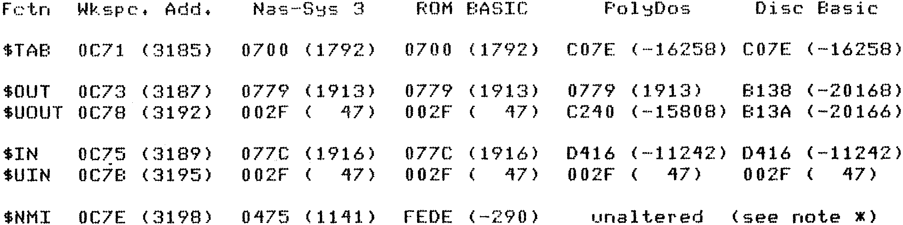
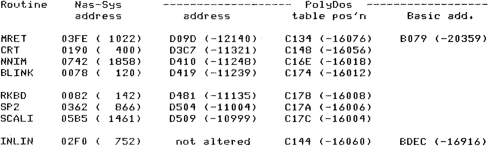

80-Bus News |
September–October 1984 · Volume 3 · Issue 5 |
| Page 37 of 47 |
|---|
The values of $TAB, $OUT, $UOUT, $IN, $UIN and $NMI are variously initialized by Nas-Sys 3, ROM BASIC, PolyDos and PolyDos Disc Basic. A table of these values might save some head scratching when incorporating user routines or patches.
* The byte at 0C7D is set to £C3 (jump) by Nas-Sys initialization. 0C7E/F is set to 0475 by Nas-Sys PARSE calling INLS at 02E8 each time, Therefore if am power up neither Nas-Sys or ROM BASIC is implemented then state of 0C7E/F is indeterminate. If Nas-Sys STMON is called (as by PolyDos) but Nas-Sys command input is not used then the byte £C3 is set but not the subsequent address.
Note that PolyDos copies out the routine table STABA to its workspace. The base is C07E and the table actually begins at C100. Within this table the addresses of MRET, CRT, NNIM, and BLINK are altered. RKBD, SP2 and SCALI are altered as these routines are written into PolyDos so as to make it compatible with Nas-Sys 1.
Note further that PolyDos Disc Basic extension to ROM basic once again alters the address of MRET and also alters the address of INLIN.
These changes are tabulated below. (decimal values in brackets)
Since PolyDos keeps STABA in RAM then a routine to trap carriage returns before the CRT routine, such as shown above, can be “patched in” rather than written as an user routine. It is only necessary to alter the address at C148 (-16056), normally D3C7 (-11321) to the “patch” address and end the “patch” routine with a jump to CRT ( C3 C7 D3 ).
| Page 37 of 47 |
|---|